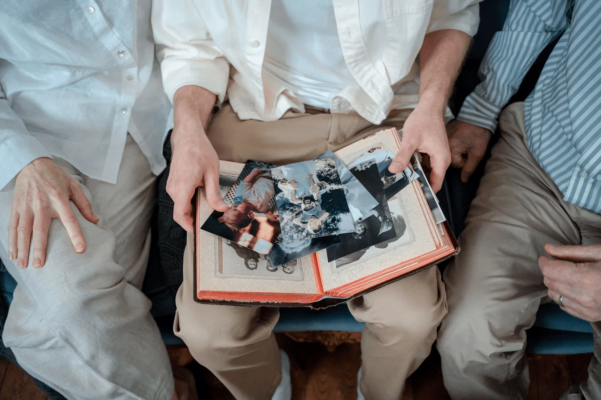

"Omdat herinneringen te kostbaar zijn om te laten vervagen."

Als iemand overlijdt, zitten de herinneringen overal. In oude fotoalbums op zolder, op de telefoons van collega's, reisgenoten en jeugdvrienden. In verhalen die alleen verteld worden als de juiste mensen toevallig samen aan tafel zitten.
Het grootste deel daarvan bereikt de familie nooit. Niet uit onwil, maar omdat de drempel te hoog is: je stuurt niet zomaar een berichtje met foto's naar iemand in rouw.
Remoria neemt die drempel weg. Eén serene, besloten plek waar iedereen die iemand gekend heeft zijn stukje van het verhaal kwijt kan. Zodat je plots de foto ziet van twintig jaar geleden — je oom op een surfplank, ergens ver weg, avontuurlijker dan je hem ooit had gekend.
Herinneringen zijn er om te delen. Wij zorgen dat ze aankomen.
Remoria is geen koude database. Het is een plek, gebouwd op een paar overtuigingen.
Elke dag gaan kostbare herinneringen verloren — foto's die nooit aankomen, verhalen die niet meer verteld worden. Remoria is er om dat te veranderen. Voor elke familie, en voor elke generatie die nog komt.